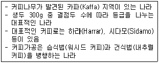
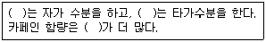
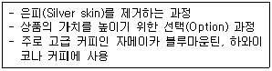

바리스타-2급 (2012-05-12 기출문제)
1과목: 커피학 개론
1. 다음 중 커피의 어원 및 명칭과 관계없는 용어는 어느 것인가?
- Kaldi
- Bun
- Bunn
- Qahwah
(정답률: 54%)

2. 커피에 관한 식물학적 내용 중 바르게 설명된 것은?
- 커피나무는 꼭두서니과(Rubiaceae)에 속하는 상록수로, 남아메리카 브라질이 원산지이다.
- 커피의 열매는 길이가 약 15-18mm의 타원형으로 파치먼트라고 불린다.
- 아라비카 종은 평균 3%, 로부스타 종은 약 1%의 카페인을 함유하고 있다.
- 아라비카 종의 경우 연평균 강우량 1,500-2,000mm의 규칙적인 비와 충분한 햇볕을 받아야 한다.
(정답률: 72%)
3. 다음의 커피체리(Coffee cherry)에 대한 설명 중 틀린 것은?
- 커피체리는 커피종자에 따라 성장속도가 다르다.
- 커피 꽃이 지고 체리가 맺혀서 수확할 때까지의 기간은 아라비카 종이 로부스타 종보다 길다.
- 커피체리는 외피, 과육, 점액질, 파치먼트, 은피, 생두의 구조로 이루어져 있다.
- 일반적으로 정상적인 체리 안에는 생두가 두 개 들어있다.
(정답률: 69%)
4. 다음 설명에 해당되는 커피 생산 국가는?

- 케냐
- 예멘
- 에티오피아
- 탄자니아
(정답률: 75%)
5. 다음 커피품종 중 계통이 다른 하나는?
- 버번(Bourbon)
- 코닐론(Conillon)
- 카투라(Caturra)
- 티피카(Typica)
(정답률: 73%)
6. 아프리카 동부에 위치한 레위니옹(Reunion)섬에서 발견된 티피카(Typica)의 돌연변이 품종은?
- 카투아이(Catuai)
- 버번(Bourbon)
- 수마트라(Sumatra)
- 문도노보(Mundo Novo)
(정답률: 69%)
7. 아라비카 커피 재배지역으로 거리가 먼 것은?
- 적도를 기준으로 남, 북위 25° 사이의 고산지대로 열대 또는 아열대지역
- 화성암 풍화지대로 토양이 비옥하고 배수가 잘 되는 지역
- 브라질이나 인도의 몬순지역처럼 건기와 우기가 명확하며 알칼리성 토양지역
- 연평균 기온이 약 15-24℃ 정도이고, 연 강우량은 1,500-2,000㎜ 수준인 지역
(정답률: 79%)
8. 티피카(Typica) 품종과 카티모르(Catimor) 품종에 대한 설명으로 맞는 것은?
- 동일한 장소에 보관 시 카티모르 품종이 색깔 변화가 빠르다.
- 티피카 품종은 다른 품종에 비해 밀도가 높다.
- 카티모르 품종이 티피카 품종 보다 훨씬 가볍다.
- 자메이카 블루마운틴(Blue Mountain)과 하와이 코나(Kona)는 티피카 품종이다.
(정답률: 71%)
9. 아라비카 커피와 로부스타 커피는 그 특성이 매우 다르다. 다음 지문의 ( )에 바르게 설명된 것은?

- 아라비카 –로부스타 - 로부스타
- 아라비카 –로부스타 - 아라비카
- 로부스타 –로부스타 - 아라비카
- 로부스타 –아라비카 - 로부스타
(정답률: 72%)
10. 커피 체리 100Kg을 수확한 후 모든 가공과정을 다 거친 뒤 최종적으로 얻을 수 있는 생두(Green bean)는 대략 어느 정도인가?
- 내추럴 커피 30Kg, 워시드 커피 30Kg
- 내추럴 커피 20Kg, 워시드 커피 20Kg
- 내추럴 커피 20Kg, 워시드 커피 30Kg
- 내추럴 커피 30Kg, 워시드 커피 20Kg
(정답률: 68%)
11. 다음 커피에 대한 설명 중 바르게 기술된 것은?
- 원두에 퀘이커(Quaker)가 많이 섞여 있을수록 좋은 품질의 커피로 판단된다.
- 콜롬비아, 케냐, 코스타리카의 생두 분류 기준은 스크린사이즈이다.
- 셰이딩커피(Shading coffee)의 대표적인 나라는 브라질이다.
- 커피는 일반적으로 파치먼트 상태로 심어 번식하는 방법을 사용한다.
(정답률: 59%)
12. 커피 재배방법 중 선 커피(Sun coffee) 재배방식에 대한 설명 중 틀린 것은?
- 선 커피 재배는 특히 브라질에서 널리 이용하는 방식이다.
- 선 커피 재배 시, 수분공급과 농약, 비료 주기 등 많은 관리가 필요하다.
- 선 커피 재배는 섀이딩(Shading) 방식보다 뛰어나 높은 품질의 커피를 생산할 수 있다.
- 선 커피 재배는 대량 수확(기계 수확) 시 유리하다.
(정답률: 61%)
13. 다음 중 커피 생산 국가와 지역이 잘못 연결된 것은?
- 탄자니아 - 모시
- 에티오피아 –마타리
- 브라질 –파라나
- 콜롬비아 - 포파얀
(정답률: 54%)
14. SCAA 결점두 분류 기준에 따라 가장 결점이 큰 생두를 모은 카테고리는 다음 중 어느 것인가?
- Full defects
- Primary defects
- First defects
- Secondary defects
(정답률: 47%)
15. 커피가공 과정에 대한 아래 설명에 해당되는 것은?

- Polishing 과정
- Grading 과정
- Hulling 과정
- Pre-cleaning 과정
(정답률: 63%)
16. 커피 생산국에 따라 생두 분류시스템을 설정하여 품질을 객관화시키고 있다. Supremo, Excelso, UGQ 등으로 생두를 분류하는 나라는?
- 브라질
- 콜롬비아
- 에티오피아
- 하와이
(정답률: 69%)
17. 커피의 맛과 향을 저하시키는 결점두(Defect bean)에 해당되지 않는 것은?
- 곰팡이가 핀 생두
- 과 발효한 생두
- 백화(白化)현상이 있는 생두
- 크기가 작은 생두
(정답률: 77%)
18. 향미가 풍부한 품질 좋은 커피를 생산하기 위한 방법으로 올바른 것은?
- 생두의 수분을 완전히 건조하기 위해 장기간 햇볕에 건조시킨다.
- 농약과 화학비료를 사용하지 않는 유기농법으로 가공한다.
- 잘 익은 붉은 색의 체리를 선별 수확한다.
- 수확 후 즉시 파치먼트를 제거한 다음 건조시킨다.
(정답률: 81%)
19. 스크린사이즈(Screen size) 18에 해당하는 커피 생두의 크기는?
- 5.14mm
- 6.14mm
- 7.14mm
- 8.14mm
(정답률: 65%)
20. 다음 중 서스테이너블 커피(Sustainable coffee)의 인증과 관계없는 단체는 어디인가?
- SCAA
- IFOAM
- FLO
- SMBC
(정답률: 52%)
21. 다음 SCAA의 생두 분류 기준이 아닌 것은?
- 생두의 크기
- 결점두의 수
- 컵 퀄리티(Cup quality)
- 생두의 무게
(정답률: 45%)
22. 우유를 마시면 소화가 잘 되지 않는 현상은 우유 중의 어떤 성분에 의한 것인가?
- 카제인
- 무기질
- 지질
- 유당
(정답률: 70%)
23. 우유는 완전식품인 동시에 생체방어기능에 중요한 역할을 하는 각종 생리활성물질의 보고이다. 이러한 생리활성물질이 생체방어기능(면역반응)을 증진시킨다. 다음 중 우유에 함유되어 있는 항균성분에 해당되지 않는 것은?
- 칼슘
- 락토페린
- 올리고당
- 면역글로불린
(정답률: 35%)
24. 생두의 카페인 제거 공정 중에 증기로 불린 생두에 유기용매를 이용하여 카페인을 추출하는 방법을 용매추출법이라 한다. 이 추출법의 특징이 아닌 것은?
- 유기용매로서 벤젠, 클로로포름, 트리클로로에틸렌 등이 이용된다.
- 비용이 적게 들지만, 용매의 잔류성 문제로 인하여 안전성에 문제가 있다.
- 용매추출법은 카페인 이외의 성분도 추출되는 단점이 있다.
- 최근에는 안전성을 고려하여 헬륨, 수소, 이산화탄소 등을 액체 상태로 만들어 이용한다.
(정답률: 69%)
25. 커피는 포도당의 흡수 지연, 혈청 콜레스테롤 감소 등을 통한 성인병 예방 효과가 있다고 한다. 다음 중 어떤 성분에 의한 것인가?
- 카페인
- 토코페롤
- 수용성 식이섬유
- 테오필린
(정답률: 40%)
26. 다음 중 커피에 함유된 카페인의 역할이 아닌 것은?
- 피로회복 효과
- 위액분비 감소 효과
- 중추신경계의 자극을 통한 각성 효과
- 신장의 혈액량 증가에 의한 이뇨 효과
(정답률: 75%)
27. 다음 중 산패가 가장 빨리 일어나는 지방산은 어느 것인가?
- 올레산
- 라우르산
- 리놀레산
- 스테아르산
(정답률: 64%)
28. 병원체가 음식물, 음료수, 식기, 손 등을 통하여 침입하는 경구전염병에 해당되지 않는 것은?
- 세균성 이질
- 파라티푸스
- 디프테리아
- 병원성 대장균
(정답률: 48%)
29. 커피전문점에서 영업업무 시작 전에 판매 가능한 양만큼 준비해 두는 각종 재료를 무엇이라고 하는가?
- Par Stock
- Coffee Stock
- Pre Stock
- Ordering Stock
(정답률: 53%)
30. 바리스타가 근무 중에 지켜야 할 자세로서 옳다고 할 수 없는 내용은?
- 항상 손님의 입장에서 근무하며 모든 손님을 공평하게 접대한다.
- 영업장에 손님이 없을 때에도 항상 올바른 서비스 자세를 유지한다.
- 손님의 취향에 따라 맞춤 서비스를 제공할 수 있도록 최선을 다한다.
- 손님 간에 대화를 할 경우에 적극적으로 손님의 대화에 참여한다.
(정답률: 84%)
2과목: 로스팅과 향미 평가(커피 배전)
31. 다음 중 로스팅에 의해 변화하지 않는 것은
- 부피의 변화
- 무게의 변화
- 생산지 고유 특성의 변화
- 향의 변화
(정답률: 81%)
32. 커피를 풀시티(Full-city) 이상 로스팅 했을 때 원두의 수분 함량은 어느 정도가 되는가?
- 약 1％
- 약 5％
- 약 7％
- 약 9％
(정답률: 60%)
33. 로스팅 단계 중 L값(명도)이 가장 높은 것부터 순서대로 배열한 것은?
- 미디엄 로스트 > 라이트 로스트 > 풀시티 로스트 > 프렌치 로스트
- 라이트 로스트 > 미디엄 로스트 > 풀시티 로스트 > 프렌치 로스트
- 풀시티 로스트 > 라이트 로스트 > 미디엄 로스트 > 프렌치 로스트
- 라이트 로스트 > 풀시티 로스트 > 미디엄 로스트 > 프렌치 로스트
(정답률: 70%)
34. 다음 로스팅에 의한 커피의 화학적 변화에 대한 설명으로 옳은 것은?
- 생두를 로스팅하면 수분 함량이 11%에서 8-9%로 감소된다.
- 커피의 신맛을 좌우하는 유기산은 로스팅 전 1%에서 5%로 증가하며, pH도 pH4.9에서 pH6.0으로 증가한다.
- 휘발성 가스 성분은 약 2.04% 생성되는데, 그 중 0.04% 정도가 탄산가스이고, 2.0% 정도는 향기성분으로 800여 가지의 휘발성화합물이 들어있다.
- 로스팅 된 분쇄커피를 추출했을 때 나오는 성분을 ‘가용성 성분(Water solubles)'이라 하는데, 이것은 커피의 맛과 향을 결정한다.
(정답률: 61%)
35. 커피를 로스팅하면 당의 갈변화(Sugar browning)가 일어나 향기성분이 생성된다. 다음 중 로스팅이 가장 많이 진행된 단계에서 생성되는 향기는?
- Nutty(고소한 향)
- Caramelly(캐러멜 향)
- Chocolaty(초콜릿 향)
- Flowery(꽃 향)
(정답률: 49%)
36. 커피의 향미를 평가하는 순서로 가장 적당한 것은?
- 향기 > 맛 > 촉감
- 향기 > 촉감 > 맛
- 촉감 > 맛 > 향기
- 맛 > 향기 > 촉감
(정답률: 68%)
37. 다음 중 커피의 쓴맛 성분이 아닌 것은?
- Caffeine
- Trigonelline
- Quinnic acid
- Glucose
(정답률: 51%)
38. 추출한 커피를 오래 가열하면서 보관할 경우, 단백질 성분이 변화하면서 나타나는 맛의 결함은?
- Briny(짠맛)
- Tarry(탄 맛)
- Woody(나무 맛)
- Vapid(밋밋한 맛)
(정답률: 64%)
39. (사)한국커피협회에서 시행하는 월드컵 테이스터스 챔피언대회(WCC)의 규정에 의한 경기 진행 제한 시간은?
- 3분
- 5분
- 8분
- 10분
(정답률: 45%)
40. 커핑(Cupping)시 물을 부은 후 3~5분 사이에 컵 상층부에 생성된 커피 막을 깨서 향을 맡은 후 채점하는 항목은?
- Break
- Clean cup
- Fragrance
- Uniformity
(정답률: 57%)
41. 에스프레소의 관능적 요소에서 바디(Body)의 설명 중 틀린 것은?
- 입안에서 느껴지는 촉감적인 특성을 의미한다.
- 바디가 좋은 경우 Full bodied, Round, Smooth 등으로 표현될 수 있다.
- 커피를 마신 후 혀에 남아있는 커피의 전반적인 향미를 말한다.
- 에스프레소에 있어서 맛의 조화와 함께 중요한 요소이다.
(정답률: 60%)
42. 다음 중 향기의 강도를 표현하는 용어와 관계가 먼 것은?
- Rich
- Full
- Rounded
- Heavy
(정답률: 62%)
43. 다음 커피의 향기 중 성격이 다른 하나는 무엇인가?
- Herby
- Spicy
- Flowery
- Fruity
(정답률: 65%)
44. 다음은 커피의 쓴맛에 대한 설명이다. 틀린 내용은?
- 디카페인 커피는 쓴 맛을 나타내지 않는다.
- 카페인은 커피 쓴 맛이 1/10을 넘지 않는다.
- 생두를 로스팅하면 새로운 쓴맛 성분이 생성된다.
- 카페인은 커피에 쓴 맛을 부여한다.
(정답률: 66%)
45. 커피를 로스팅할 때 열분해 과정에서 나타나는 현상은?
- 유리수의 기화
- 밀도의 상승
- 향미의 생성
- 급격한 온도 하락
(정답률: 50%)
3과목: 커피 추출
46. 커피의 추출시간과 분쇄의 관계를 바르게 설명한 것은?
- 일반적으로 추출시간이 길 때는 가는 입자가, 짧을 때는 굵은 입자가 적합하다.
- 커피의 분쇄는 시간단축을 위해 미리 분쇄해 놓는 것이 좋다.
- 커피를 분쇄할 때 미분이 많이 발생하는 분쇄기가 좋은 그라인더이다.
- 그라인딩 밀(Grinding mill)보다는 커팅 밀(Cutting mill)이 분쇄할 때 열이 더 많이 발생한다.
(정답률: 50%)
47. 다음은 커피의 산패에 관한 내용 중 올바른 것은?
- 포장 용기 내에 미량의 산소만 존재해도 그 속의 원두는 완전 산화된다.
- 약하게 로스팅 된 커피일수록 산패가 빠르게 진행되는 특성이 있다.
- 10℃ 상승할수록 커피 향기 성분이 두 배로 빠르게 손실되는 특징이 있다.
- 산패는 습도와 무관하여 냉동 상태로 보관하는 것이 좋다.
(정답률: 51%)
48. 핸드드립으로 커피를 추출할 경우 고려해야할 사항 중 가장 거리가 먼 것은?
- 신선하고 좋은 커피
- 추출 양에 적합한 커피의 양
- 드립 포트의 재질
- 물의 온도와 뜸 들이는 시간
(정답률: 75%)
49. 에스프레소를 설명한 내용 중 바르지 않은 것은?
- 에스프레소는 원두에 뜨거운 물을 통과시켜서 만든 진한 원액으로, 강한 압력을 이용해서 커피를 추출하는 방식이다.
- 90-95℃의 온도와 8-10bar 압력의 물이 20-30초 동안 분쇄된 원두를 통과하여 추출된다.
- 에스프레소는 고(高)농도의 향미 성분을 빠르게 추출하는 것이 목적이므로 다른 추출 방식보다 분쇄입자를 굵게 하는 것이 좋다.
- 분쇄된 커피를 필터 바스켓에 담아 탬핑 과정을 거쳐 그룹헤드에 신속히 장착하여 추출한다.
(정답률: 79%)
50. 에스프레소를 50초에 추출하였다. 다음 중 먼저 조절해야 할 사항은?
- 원두의 입자를 더 크게 분쇄한다.
- 커피투입량을 늘려 준다.
- 보일러 압력을 높여 준다.
- 탬핑 압력을 높여 준다.
(정답률: 59%)
51. 다음 중 에스프레소 추출 시 틀린 것은?
- 도징 전에 필터 바스켓의 물기를 제거하고 깨끗이 닦아준다.
- 포타필터를 머신에 장착한 후 추출버튼을 곧바로 누른다.
- 태핑(Tapping) 시 최대한 힘을 가하는 것이 중요하다.
- 에스프레소가 추출되는 현상에 따라 분쇄 입자를 조절해준다.
(정답률: 71%)
52. 일반적으로 커피 맛을 가장 잘 음미할 수 있는 적당한 온도는?
- 95℃
- 85℃
- 65℃
- 38℃
(정답률: 67%)
53. 연수기는 주기적으로 청소를 하는데 무엇으로 하는가?
- 소금
- 뜨거운 물
- 식초
- 우유
(정답률: 73%)
54. 원두 통(Hopper)을 주기적으로 청소를 해야 하는데 그 주된 이유는 무엇인가?
- 실버 스킨
- 커피 오일
- 온도유지
- 습도유지
(정답률: 73%)
55. 시각적인 에스프레소 평가 시 크레마(Crema)의 체크 포인트가 아닌 것은?
- 크레마 칼라
- 크레마의 지속력
- 크레마의 두께
- 크레마의 온도
(정답률: 72%)
56. 다음은 에스프레소 추출 원리를 설명한 것이다. 틀린 것은?
- 최상의 농도와 맛의 일관성을 유지하도록 규격화한 방식이다.
- 추출되는 불용해성 물질은 유분과 콜로이드가 대표적인 성분이다.
- 고압의 물이 커피를 통과하기 때문에 입자는 미세하게 분쇄해야 한다.
- 용해성 물질은 추출되고 불용해성 물질은 추출되지 않는다.
(정답률: 60%)
57. 다음 설명 중 틀린 것은?
- 에스프레소는 항상 30ml를 추출해야 한다.
- 에스프레소는 온도의 유지와 밀접한 관계가 있다.
- 에스프레소는 크레마의 지속성과 관계가 있다.
- 에스프레소를 위해 분쇄 커피와 공기의 접촉시간을 최소화해야 한다.
(정답률: 66%)
58. 다음 중 에스프레소 추출 시간이 기준보다 짧았을 때의 원인이 아닌 것은?
- 커피 양을 적게 담았을 때
- 오래된 원두를 사용하였을 때
- 물의 온도가 높을 때
- 커피입자가 굵을 때
(정답률: 40%)
59. 다음 중 얼음을 이용한 차가운 메뉴는?
- 도피오(Doppio)
- 카푸치노 프레도(Cappuccino Freddo)
- 카페 코레또(Caffe Correto)
- 카라멜 마끼야또(Caramel Macchiato)
(정답률: 66%)
60. 다음 바리스타(2급) 인증 실기평가 중 불합격 요인이 아닌 것은?(오류 신고가 접수된 문제입니다. 반드시 정답과 해설을 확인하시기 바랍니다.)
- 에스프레소 추출 시 크레마 양이 적어 커피액이 보였다.
- 시연 중 바닥에 떨어진 탬퍼를 다시 주워 닦은 후 사용하였다.
- 머신 상부에 물이 담긴 피처를 올려놓았다.
- 에스프레소를 55ml 추출하여 제공하였다.
(정답률: 35%)